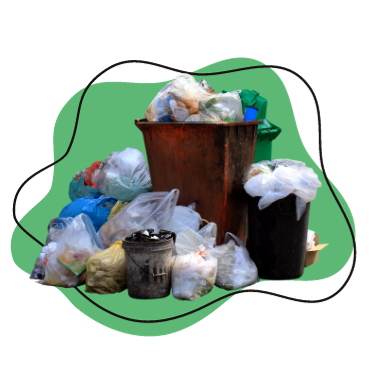

Cara Melakukan daur Ulang
Memisahkan Sampah Sesuai Jenisnya
Melakukan Zero Waste
Membuat Pupuk dari Sampah Organik
Memberikan tempat Sampah Setiap Hari
Melakukan Daur Ulang Pada Sampah Anorganik
Cara pertama yang dapat kamu lakukan untuk pengelolaan sampah, dapat dimulai dengan memisahkan sampah menjadi 2 bagian, yakni organik dan anorganik. Kamu bisa mulai menyediakan 2 buah tempat sampah di rumah dan beri tanda untuk mempermudahnya. Cara seperti ini akan mempermudah kamu dalam memisahkan sampah rumah tangga yang dihasilkan setiap harinya.
Konsep zero waste yang mulai sering disuarakan agar manusia mulai peduli dengan alam dapat diwujudkan dengan menggunakan barang-barang yang tidak habis pakai. Salah satunya seperti mengganti plastik dengan tas belanja kain, mengganti styrofoam dengan kotak bekal, dan memakai botol untuk mengurangi pemakaian air minum dalam kemasan. Pada intinya kamu bisa mulai mengurangi pemakaian plastik dengan benda-benda yang dapat digunakan secara berulang. Walaupun cukup merepotkan namun, perubahan yang kamu lakukan dapat memberikan dampak yang berarti bagi bumi dan alam.
Pengelolaan sampah selanjutnya juga dapat dilakukan pada sampah organik. Kamu tentunya sudah tidak asing dengan teknik daur ulang, bukan? Daripada membiarkan sampah organik berbau busuk karena karena bakteri pengurai ada baiknya kamu melakukan daur ulang dengan menjadikannya sebagai pupuk kompos pada tanaman. Namun, jika aroma selama proses pembuatan pupuk kompos cukup mengganggu, kamu bisa menyumbangkan sampah organic pada penjual tanaman atau orang yang memiliki kesukaan berkebun. Sehingga, kamu tetap ikut berkontribusi dalam pengelolaan sampah.
Tempat sampah di dalam rumah sangat penting untuk dijaga kebersihannya. Oleh sebab itu, kamu perlu menjaganya dengan selalu membuang sampah setiap hari dan memastikan tempatnya bersih agar tidak menimbulkan aroma tidak sedap di dalam ruangan.Kamu bisa mengalasi tempat sampah dengan plastik yang ramah lingkungan sehingga kebersihannya tetap terjaga setiap saat.
Sama seperti konsep 3R (reuse, reduce, dan recycle) kamu dapat membantu pengelolaan sampah dengan memilih barang-barang yang masih dapat digunakan kembali. Misalnya botol kaca yang dapat dibersihkan dan digunakan kembali untuk menyimpan barang atau menjadikannya sebagai hiasan rumah.Sebelum melakukan daur ulang, pastikan juga kemasan seperti kaca, botol, kertas, atau kardus memiliki logo daur ulang agar lebih aman untuk digunakan kembali dengan fungsi berbeda tanpa takut timbulnya reaksi kimia berbahaya.Melakukan 5 kontribusi dalam pengelolaan sampah di rumah seperti ini setiap harinya, dapat membantu lingkungan kita menjadi lebih bersih, sehat, dan aman dari gangguan bakteri penyebab penyakit di sampah rumah tangga.Semoga informasi ini dapat bermanfaat bagi kamu yang ingin ikut serta dalam menciptakan lingkungan sehat bagi keluarga.